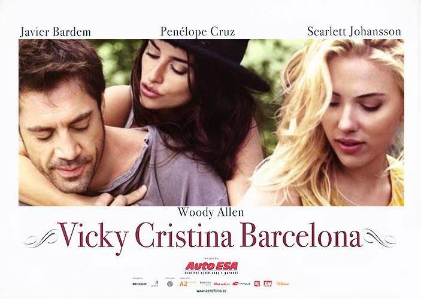
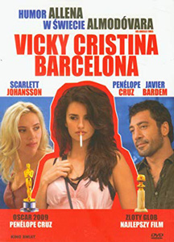
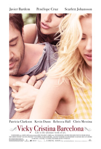
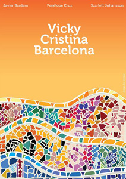
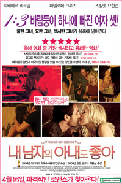
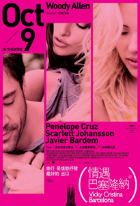
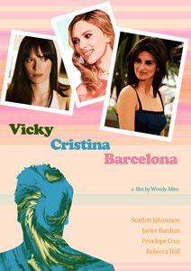

Spanish actor Joan Pera, who dubbed Allen's voice in his previous films, makes a cameo appearance.
New York friends Vicky and Cristina are spending the summer in Barcelona. One of their differences in life is the type of man to whom they are attracted. For Cristina, she feels that being hurt in the search for love - which usually means being attracted to dangerous men - is what is required to find that true passion. Vicky, on the other hand, needs a certain grounding in love, which usually equates itself to being attracted to stable, safe men. Vicky is engaged to stable, safe Doug, the two who plan to get married in the fall after Vicky's return to New York.
At an art showing in Barcelona, Cristina is immediately attracted to Juan Antonio, an artist she sees across the room. That attraction is strengthened when he later approaches Vicky and Cristina together, proposing they go away together to Oviedo for the weekend, which would include him having sex with both. Despite no guarantees of sex, Cristina wants to go, with a reluctant Vicky, who is incredulous to Juan Antonio's offer, tagging along.
When Vicky is forced to spend some extended time alone with Juan Antonio that weekend, she finds that she too is beginning to have strong romantic feelings for him, which she doesn't tell Cristina. Vicky has to figure out what to do about her feelings, especially as Doug suggests coming to Barcelona himself so that they can get married there, and as Judy, the friend with who Vicky and Cristina are staying, makes a confession.
Conversely, Cristina's pursuit of romance with Juan Antonio is complicated by the arrival of Maria Elena, Juan Antonio's artist ex-wife, whose relationship with Juan Antonio was characterized by extreme passion which often crossed the line into violence.
In 2007, controversy arose in Catalonia (Spain) because the film was partially funded with public money; Barcelona's city hall provided one million Euro and the Generalitat de Catalunya (Government of Catalonia) half a million, or ten percent of the film's budget.
The film was based on a screenplay Woody Allen originally wrote years earlier, which was set in San Francisco. Since his deal for this film specified that it must be shot in Spain, Allen looked for a story from his files that could be rewritten for a Spanish setting, took his old San Francisco-set script and rewrote it to take place in Barcelona.
Vicky Cristina Barcelona (2008) was at a time Woody Allen's most profitable film, grossing $96 million on a $15 million budget.
A part of the film is set in the city of Oviedo. One of the sights of Oviedo that was not featured in the film is a life-size statue of Woody Allen which was installed in 2003.
Javier Bardem (Juan Antonio) and Penélope Cruz (María Elena) play a divorced couple in the film. In real life, they started a relationship while working on the film and married in July 2010. Although they didn't meet on the set of this film, they met on the set of Cruz's first feature, Jamon Jamon (1992) when she was 16.
Woody Allen wrote the parts of Cristina and Juan Antonio with Scarlett Johansson and Javier Bardem in mind. Apparently, Bardem was his first and only choice for the male lead.
For his brief driving scene in this movie, Javier Bardem underwent hours of driving instruction and still didn't have a driver's license to show for his efforts when the movie wrapped.
The film features several paintings by the Catalan artist Agusti Puig. Puig was commissioned to create a painting for the movie, the result being La Protectora II. But it wasn't used on set.
The movie features several books about sexuality: the novel Middlesex by Jeffrey Eugenides (when Vicky tries to sleep and Cristina writes poetry in the kitchen), The Sexual Life of Catherine M. by Catherine Millet (read by Cristina later in the movie) and Tropic of Capricorn by Henry Miller (read by Cristina right after the scene kissing with Juan Antonio and Maria Elena in the dark room).
When Vicky (Rebecca Hall), Christina (Scarlett Johansson) and Doug (Chris Messina) are walking down the street together, Vicky defends Christina's threeway relationship by saying "whatever works." Befuddled, Doug spits back at Vicky, "Whatever works??" The title of Woody Allen's very next movie was Whatever Works, which employed a subplot involving another threeway relationship.
- Santa Maria Del Mar Church, Barcelona, Spain;
- Avilés, Asturias, Spain;
- Barcelona Harbour, Barcelona, Spain;
- Passeig de Gràcia, Barcelona, Spain;
- Naranco Mountain, Oviedo, Asturias, Spain;
- Park Guell, Gracia, Barcelona, Spain (When Vicky bumps into Juan Antonio);
- La Pedrera - 92 Passeig de Gràcia, Eixample, Barcelona, Spain (When Vicky and Cristina explore Barcelona);
- Museu Nacional d'Art de Catalunya, Barcelona, Spain (on the steps outside, looking at Pl. Espanya).
Cristina: "I can't guarantee the love-making, because I happen to be very moody."
Juan Antonio: "Let's not negotiate like a contract. I came over here with no subterfuge and presented my best offer."
"A witty and ambiguous movie that's simultaneously intoxicating and suffused with sadness and doubt." - Scott Tobias : The A.V. Club
"When great artists maintain their health and energy into their 70s, amazing things can happen - and they're happening with Woody Allen." - Mick LaSalle : San Francisco Chronicle





